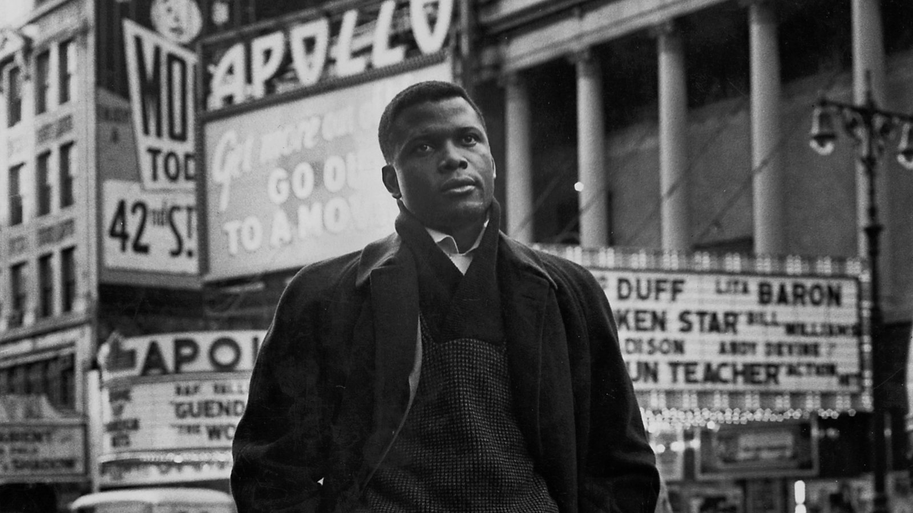

Three Images
Three images. The first two are exported to PNG at maximum resolution and full-size. The third is a jpg of lower resolution.
We put each image in a div container with double the height of the viewport.



Three images. The first two are exported to PNG at maximum resolution and full-size. The third is a jpg of lower resolution.
We put each image in a div container with double the height of the viewport.